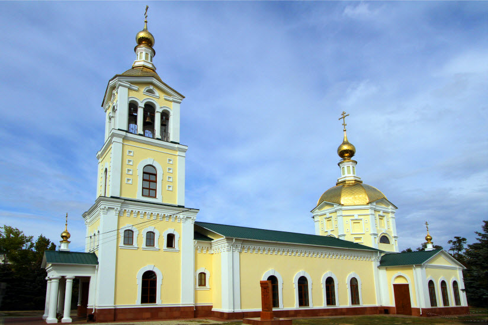

Никольский кафедральный собор
Главным городским храмом Камышина стал собор, освященный в честь святого Николая Чудотворца. Каменное здание Никольской церкви, возведенное в 1824-25 гг., признано Памятником архитектуры федерального значения. Начало православного храма принято относить к 1775 г., когда возле кладбища была построена деревянная церквушка, считающаяся его предшественницей. Храм является единственным уцелевшим в советскую эпоху культовым зданием Камышина. После закрытия и разграбления в 30-е годы церковь вновь начала функционировать в тяжелое военное время. По ходатайству прихожан службы здесь возобновились в 1944 году. На закате советской эпохи здание начали реконструировать, пристроили колокольню. С 2000-го года церковь стала кафедральным собором.